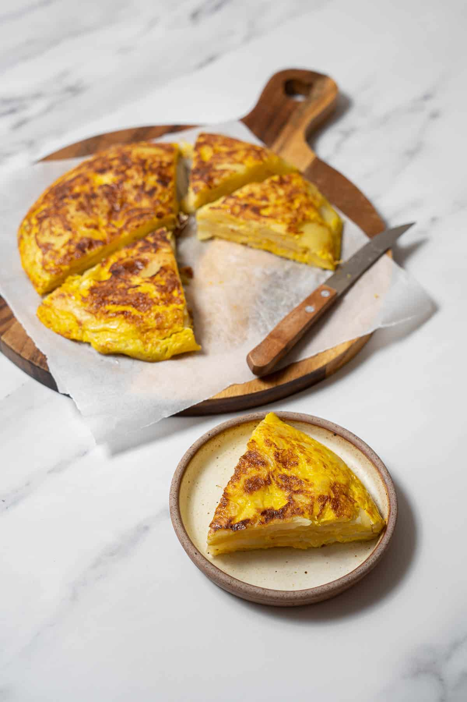

Tortilla de Patata

Looking for an authentic Spanish tortilla recipe? You've come to the right place
Ingredients
- 2lbs of Potatos
- salt to taste
- 8 Large eggs
- 1 white onion
- Olive Oil
Instructions
A little trick i use is to microwave the cut potatos and onions first before adding them to the pan.(This avoids any potential burning)
You can buy dedicated tortilla pans but a heavy bottom thick walled non stick small frying pan will be just as good
- Chip the potatos and onions relatively finely into a bowl and place into the microwave for 5 mins checking regularly until cooked through(Adjut time as needed). If you aren't using a microwave then place the potatos and onions
and potatos into a pan and fry gentle on a medium to low heat until cooked through. (If using the microwave method just add straight to a frying pan and brown for a few minutes)
- Once the potatoes are cooked an browned,regardless of method used, spread them flat acorss the bottom of the pan and pour over the eggs
- Cook on a low heat until it is firm when you put a knife into the tortilla.
- Now for the tricky bit! Place a large plate over the pan and quickly flip the tortilla over. Slide it back into the pan and continue cooking for a few extra minutes
There you have it! A delicious Spanish Omelet!
Return to Home